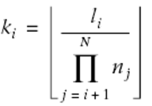
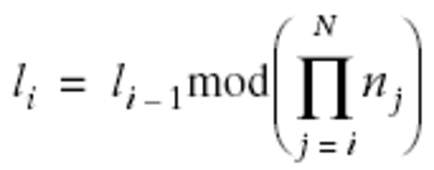
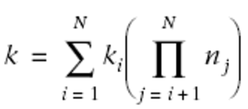

As described previously, an iterator is an abstract concept that encapsulates the idea of walking through each element of an array. The basic pseudocode for an iterator-based loop used in NumPy is:
set up iterator (including pointing the current value to the first value in the array) while iterator not done: process the current value point the current value to the next value
Everything but process the current value must be handled by the iterator and deserves discussion. As a result, there are basically three parts to the iterator design:
These will each be discussed separately. The design considerations that went into NumPy's iterators included making the overhead for using them inside of a loop as small as possible and making them as fast as possible.
The first decision is the order in which the elements will be taken. Although one could conceive of an iterator with no guarantee of the order in which the elements are taken, it is useful most of the time for the programmer to know the order. As a result, iterators in NumPy follow a specific order. The order is obtained using a relatively simple approach patterned after simple counting (with wrap-around) using a tuple of digits. Let a tuple of N integers represent the current position in the array, with (0,…,0) representing the first element of the n1 x n2 x … x nN array, and (n1-1, n2-1,…, nN-1) representing the last element.
This tuple of integers represents an N-digit counter. The next position is found by incrementing the last digit by one. If, during this process, the ith digit reaches ni, it is set to 0, and the (i-1)th digit is incremented by 1.
For example, the counting for a 3 x 2 x 4 array would proceed as follows:
The next increment would produce (0,0,0), and the iterator would be set up to start all over again.
This counter is the essence of the NumPy iterator. The way it is incremented plays an important part in the iterator implementation. As a result, the implementation of the counter will be discussed in a subsequent section. Assuming that this counter that specifies the current position in the array is available, a pointer to the current value in the array can always be obtained by multiplying the integers of the counter by the stride values defined with the array, yielding the number of bytes to add to the memory address of the first element of the array.
For example, if data is a pointer to the start of the array, counter is the counter (or coordinate) array, and strides is an array of stride values, the following operations:
currptr = (char *)data; for (i=0; i<N; i++) currptr += counter[i]*strides[i];
set currptr to the (first byte of the) current value of the array.
In fact, rather than compute this multiplication every time a pointer to the current value is needed, the implementation can keep track of the pointer at the same time that it keeps track of the counter, making adjustments every time the counter is altered. For example, when the ith index of the counter is incremented by 1, currptr is incremented by strides[i]. When the ith index is reset to 0, this is the same as subtracting ni-1 from the current index, and therefore the memory address of the current value of the array should be decremented by (ni-1) -strides[i].
For the general case, the iterator maintains the counter specifying the position in the array along with a pointer to the current value. In the case of an array whose elements are all next to each other in memory, keeping track of this counter is unnecessary extra work because the memory address of the current value of the array can be maintained just by incrementing its value by the size of each element in the array when the next value is desired.
Another important aspect of the iterator (especially when it is used in a loop) is figuring out when the iterator is finished and how to signal that information. The most general approach to signaling is to attach a flag variable to the iterator that is checked each time around the loop, and set when there are no more elements to iterate through.
One possible way to set this flag would be to look for the transition in the first-dimension counter from n1-1 to 0. The problem with this approach is that it requires a temporary variable to store the last counter value, so it doesn't work for contiguous arrays, which do not keep track of the counter.
The easiest thing to do, however, is just remember that a particular number (n1 x…x nN) of iterations will take place given the size of the array. This number can be stored in the iterator structure. Then, during each iterator stage, this number can be decremented. When it reaches 0, the iterator should terminate.
NumPy uses a slight modification of this countdown. In order to preserve the total number of iterations as another piece of information, as well as to keep a running counter of the total number of iterations so far, NumPy uses an integer counter that counts up from zero. The iteration terminates when this number reaches the total number of elements.
When the iterator is created, the size of the underlying array must be computed and stored. In addition, the integer counter must be set to 0, and the coordinate counter must be initialized to (0,0,…,0). Finally, NumPy determines whether the iterator can be based on simple contiguous memory and sets a flag to remember the answer.
In order to speed up the "back-tracking step" that occurs whenever an index in the counter moves from ni-1 to 0, the product of (ni-1) xstrides[i] is precalculated and stored for each index. In addition to avoid repeatedly computing ni-1, this is also precomputed and stored in the structure.
While it is doubtful that there is any speed increase in storing this easily computed quantity, it is still very useful to have the dimensions of the array stored in the iterator structure. In the same manner, it is useful to have information about strides stored directly in the iterator, along with a variable tracking how many dimensions the underlying array has. With the dimensions and strides of the array stored in the iterator, modifications to how the array is interpreted later can be easily accomplished by modifying these values in the iterator and not in the underlying array itself. This is especially useful in implementing broadcasting, which makes arrays that are not shaped the same appear as if they were shaped the same (as will be explained later).
Finally, an array of precomputed factors is stored to simplify the calculations involved in the one-to-one mapping between the single integer counter into the array and its N-index counterpart. For example, every item in the array can be referenced by a single integer k between 0 and n1 x … x nN-1-1 or by a tuple of integers: (k1,…,kN). The relationship can be defined by l1=k and:


Going back the other way, the relationship is:

The terms within the parentheses of the previous equation are precomputed and stored in the iterator as an array of factors, to facilitate mapping back and forth between the two ways of thinking about the N-dimensional index.
Code for keeping track of the N-dimensional index counter is fairly straightforward. A distinction must be made between the case when the iterator will simply add 1 to the last index and when wrapping might occur. Whenever wrapping occurs, it has the potential to cause other indices to wrap as well. Therefore, there must be some kind of for loop to handle all the altered indices.
A straightforward approach is to start at the end of the counter, or coordinate, array and work backward. At each index position, the code checks to see whether the coordinate is currently smaller than ni-1. If it is, it just adds 1 to that coordinate position and adds strides[i] to the memory address of the current value pointer. Whenever this happens, the for loop can break early, and the counter increment is done.
If the ith coordinate is greater than or equal to ni-1, it needs to be reset to 0 and (ni-1)xstrides[i] must be subtracted from the memory address of the current value pointer (to move back to the beginning of that dimension). In this case, the previous index position is checked.
All the necessary information can be represented in a structure we'll call it. The contents are:
coords
The coordinate index, N
dims_m1
The index of the highest element ni-1 for each dimension
strides
The stride in each dimension
backstrides
The amount to move back in order to return from the end of each dimension to the beginning: (ni-1) x strides[i]
nd_m1
currptr
The code for the counter-tracking can then be written in C as follows:
for (i=it->nd_m1; i>=0; i--) {
if (it->coords[i] < it->dims_m1[i]) {
it->coords[i]++;
it->dataptr += it->strides[i];
break;
}
else {
it->coords[i] = 0;
it->dataptr -= it->backstrides[i];
}
}
This implementation uses the break statement and a for loop. We could instead have used a while statement and a flag indicating whether to continue looping:
done = 0;
i = it->nd_m1;
while (!done || i>=0) {
if (it->coords[i] < it->dims_m1[i]) {
it->coords[i]++;
it->dataptr += it->strides[i];
done = 1;
}
else {
it->coords[i] = 0;
it->dataptr -= it->backstrides[i];
}
i--;
}
Part of the reason I chose the for loop implementation is that the while loop looks a lot like the for loop (initialize counter, check against a value, decrement the counter), anyway. I typically reserve while loops for situations where the iteration requires more than a single iteration index. A bigger reason for choosing the for loop version, however, is that this code snippet implementing the counter increment will be used as a macro inside of every iterator loop. I wanted to avoid defining the extra variable done.
We are now in a position to understand the entire structure of the NumPy iterator. It's represented as the following struct in C:
typedef struct {
PyObject_HEAD
int nd_m1;
npy_intp index, size;
npy_intp coords[NPY_MAXDIMS];
npy_intp dims_m1[NPY_MAXDIMS];
npy_intp strides[NPY_MAXDIMS];
npy_intp backstrides[NPY_MAXDIMS];
npy_intp factors[NPY_MAXDIMS];
PyArrayObject *ao;
char *dataptr;
npy_bool contiguous;
} PyArrayIterObject;
The arrays in this structure (coords, dims_m1, strides, backstrides, and factors) are fixed-size arrays with dimensions controlled by the NPY_MAXDIMS constant. This choice was made to simplify memory management. However, it does limit the number of dimensions that can be used. It could easily be handled differently by dynamically allocating the needed memory when the iterator is created; such a change would not alter the fundamental behavior.
The npy_intp variables are integers just large enough to hold a pointer for the platform. npy_bool is a flag that should be either TRUE or FALSE. The PyObject_HEAD part of the structure contains the required portion that all Python objects must contain.
All of the variables have been explained before, but for clarity they are:
nd_m1
index
A running counter indicating which element the iterator is currently at in the array. This counter runs from 0 to size-1.
size
coords
An array of N integers providing the counter, or the N-dimensional location of the current element.
dims_m1
An array of N integers providing one less than the number of elements along each dimension: n1-1, n2-1,…, nN-1.
strides
An array of N integers providing the number of bytes to skip when advancing to the next element in a particular dimension.
backstrides
An array of N integers providing the number of bytes to subtract when the internal index counter rolls from ni-1 to 0 in a particular dimension.
factors
An array of factors useful in rapidly calculating the mapping between the one-dimensional index and the N-dimensional coords array. This array is needed only if PyArray_ITER_GOTO1D is called.
ao
A pointer to the underlying array this iterator is built from.
datapr
A pointer to the (first byte of) the current value of the array.
contiguous
TRUE (1) if this iterator is for a contiguous array and FALSE (0) if otherwise. This is the same as (ao->flags & NPY_C_CONTIGUOUS). It's much simpler to find the next element in the array each time when the array is contiguous, so it is worth checking for.